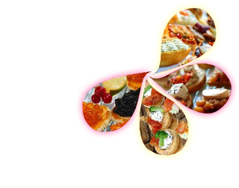

<ion-content padding>
  <ion-slides pager>
    <ion-slide>
      <h1>Traiteurs</h1>
      <ion-card-content>
        Si vous êtes traiteurs vous pourriez mettre le menus de la semaine suivante
      </ion-card-content>
      <div>
        
      </div>
    </ion-slide>
    <ion-slide>
      <div>
        
      </div>
      <h1>Collaborateurs</h1>
      <ion-card-content>
        Si vous êtes collaborateurs vous pouvez choisir le menu du jour ou le menu de la semaine
      </ion-card-content>

      <ion-buttons>

        <button ion-button (click)="skip()" id="skip">Skip</button>
        <ion-checkbox color="dark" (ionChange)="updateCheckBox()"></ion-checkbox>

      </ion-buttons>
    </ion-slide>

  </ion-slides>
  <!--
  Generated template for the OnboardingPage page.

  See http://ionicframework.com/docs/components/#navigation for more info on
  Ionic pages and navigation.
-->
  <ion-header *ngIf="!checkBox">

    <ion-navbar>
      <ion-title>Onboarding</ion-title>
    </ion-navbar>

  </ion-header>


  <ion-content padding *ngIf="!checkBox">


  </ion-content>